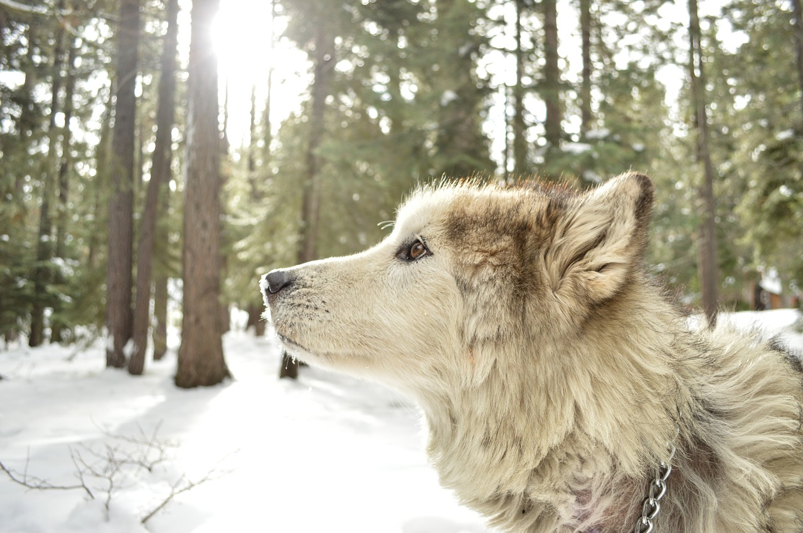
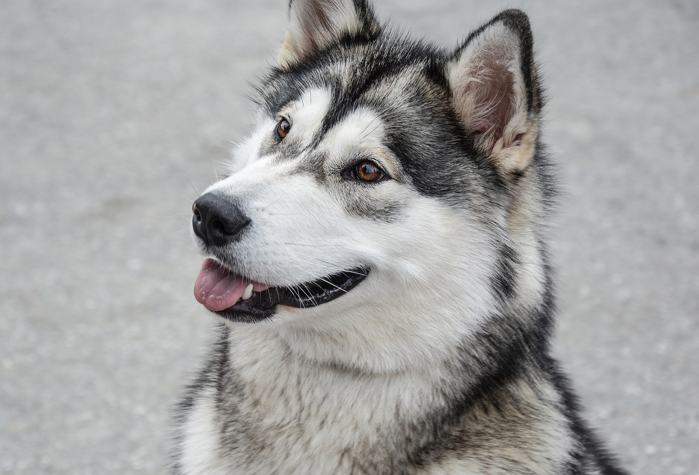
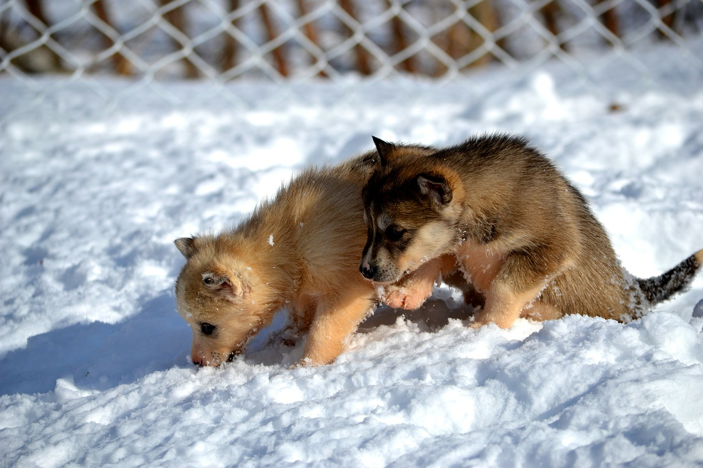

Current Dogs for Sale
Below are our current dogs. Please contact us if you are interested in any of our dogs to get the current price.
Please note that we do try to keep the listings as update to date as possible, but a dog shown here may not be available.
Mandy
Mandy is still just a puppy. Coming in at 1 year old and 2 months, she still has a lot of energy in her, so she would like a home with a lot of activity.
Mandy has had all of her shots and is ready to go to a nice home!
Shiloh
Shiloh is the old many of the group. He is 6 years old and is still in great health.
Previous owners moved to a very warm climate and did not want to make him melt in hot sun.
Shiloh is a calm dog and is ready to go to his new home at any time.
Bert and Ernie
Bert and Ernie are two new born puppies! Only 7 weeks old!
While two look like brothers, they actually are not. But since birth the two have been inseparable, so we are only offering them to a home that with take both.
Due to their age, they are not quite ready to go home yet. We will need to wait until they are 10 weeks old.
Neither pup as had their shots yet and this will need to be taken care of by the future owner as soon as possible.